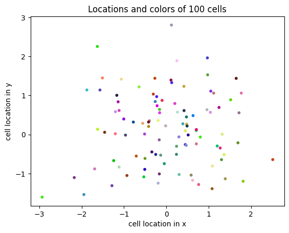
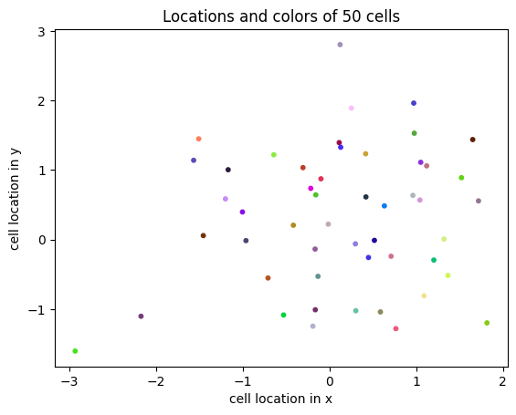
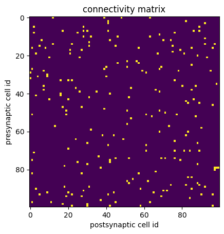
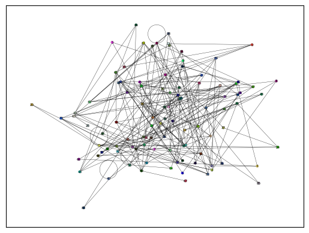
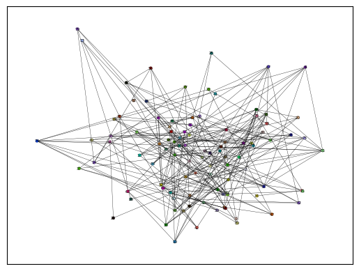
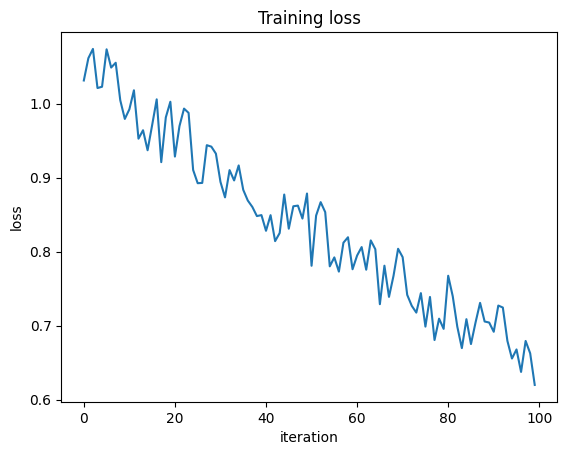

datamate Examples¶
Basic examples demonstrating datamate functionality.

Filesystem as memory¶
from pathlib import Path
import numpy as np
import matplotlib.pyplot as plt
from datamate import Directory, set_root_dir
%load_ext autoreload
%autoreload 2
# we set the root directory
root_dir = Path(".") / "data"
set_root_dir(root_dir)
# we erase data from earlier execution of this notebook -- ignore this cell
if root_dir.exists():
import shutil
shutil.rmtree(root_dir)
# we create a Directory instance
cell_measurements = Directory()
cell_measurements
Directory_0000/
(empty)
We ‘measure’ cell attributes: identity, x- and y-coordinates, and colors.
# we store data by setting attributes
n_cells = 100
cell_measurements.cell_id = np.arange(n_cells)
cell_measurements.x = np.random.normal(0, 1, size=n_cells)
cell_measurements.y = np.random.normal(0, 1, size=n_cells)
cell_measurements.colors = np.random.rand(n_cells, 3)
# we verify files with the tree-view method
# (automatically called)
cell_measurements
Directory_0000/ - Last modified: January 17, 2025 19:36:16
├── _meta.yaml
├── cell_id.h5
├── colors.h5
├── x.h5
└── y.h5
displaying: 1 directory, 5 files, 2 levels.
# we access data as attributes
plt.scatter(cell_measurements.x, cell_measurements.y, c=cell_measurements.colors, s=10)
plt.xlabel("cell location in x")
plt.ylabel("cell location in y")
plt.title(f"Locations and colors of {n_cells} cells")
Text(0.5, 1.0, 'Locations and colors of 100 cells')

# we index h5-arrays from disk without fully loading them to reduce memory load
start_cell_id = 0
end_cell_id = 50
plt.scatter(
cell_measurements.x[start_cell_id:end_cell_id],
cell_measurements.y[start_cell_id:end_cell_id],
c=cell_measurements.colors[start_cell_id:end_cell_id],
s=10,
)
plt.xlabel("cell location in x")
plt.ylabel("cell location in y")
plt.title(f"Locations and colors of {end_cell_id - start_cell_id} cells")
Text(0.5, 1.0, 'Locations and colors of 50 cells')

# we use the directory name to point to the same directory again
cell_measurements = Directory("Directory_0000")
# works also with specifying the root directory
# cell_measurements = Directory(root_dir / "Directory_0000")
cell_measurements
Directory_0000/ - Last modified: January 17, 2025 19:36:16
├── _meta.yaml
├── cell_id.h5
├── colors.h5
├── x.h5
└── y.h5
displaying: 1 directory, 5 files, 2 levels.
Hierarchical data organization¶
# we navigate upwards on the filesystem hierarchy
cell_measurements.parent
data/ - Last modified: January 17, 2025 19:36:16
└── Directory_0000/
├── _meta.yaml
├── cell_id.h5
├── colors.h5
├── x.h5
└── y.h5
displaying: 2 directories, 5 files, 2 levels.
# we navigate upwards twice
cell_measurements.parent.parent
examples/ - Last modified: January 17, 2025 19:36:16
├── .gitignore
├── 01a_datamate_examples.ipynb
├── 01b_parallel_read_and_write.ipynb
└── data/
└── Directory_0000/
...
displaying: 3 directories, 3 files, 2 levels.
# we create a pointer to a child Directory
# (as long as no file/attribute with this name already exists)
cell_measurements.connections
connections/
(empty)
# we `measure` a random connectivity matrix
connectivity_matrix = np.random.randn(n_cells, n_cells) > 2
plt.imshow(connectivity_matrix)
plt.xlabel("postsynaptic cell id")
plt.ylabel("presynaptic cell id")
plt.title("connectivity matrix")
Text(0.5, 1.0, 'connectivity matrix')

# we store the connectivity as graph (i.e. edges) because its sparse
post_cell_id, pre_cell_id = np.where(connectivity_matrix)
cell_measurements.connections.pre_cell_id = pre_cell_id
cell_measurements.connections.post_cell_id = post_cell_id
# the connections are now stored in our directory
cell_measurements
Directory_0000/ - Last modified: January 17, 2025 19:36:16
├── _meta.yaml
├── cell_id.h5
├── colors.h5
├── connections/
│ ├── _meta.yaml
│ ├── post_cell_id.h5
│ └── pre_cell_id.h5
├── x.h5
└── y.h5
displaying: 2 directories, 8 files, 2 levels.
# we access them later from the same directory
cell_measurements.connections
connections/ - Last modified: January 17, 2025 19:36:16
├── _meta.yaml
├── post_cell_id.h5
└── pre_cell_id.h5
displaying: 1 directory, 3 files, 2 levels.
# with attribute-style access to the h5-array
cell_measurements.connections.pre_cell_id[:]
array([12, 39, 48, 63, 41, 82, 41, 92, 2, 28, 89, 17, 28, 30, 41, 86, 89,
2, 25, 76, 68, 28, 32, 46, 63, 92, 6, 42, 70, 74, 31, 12, 22, 92,
97, 5, 31, 45, 75, 1, 8, 57, 85, 96, 21, 27, 79, 75, 3, 21, 67,
81, 88, 10, 26, 93, 51, 56, 46, 57, 85, 40, 51, 69, 1, 39, 68, 7,
59, 78, 95, 0, 61, 9, 4, 9, 40, 0, 16, 20, 22, 76, 98, 7, 80,
87, 24, 53, 7, 66, 85, 26, 35, 68, 16, 42, 3, 16, 31, 52, 10, 20,
86, 82, 83, 89, 96, 17, 27, 39, 19, 51, 68, 71, 1, 19, 61, 77, 64,
87, 53, 51, 13, 73, 90, 32, 68, 83, 38, 44, 82, 24, 49, 76, 30, 88,
41, 61, 20, 61, 76, 81, 84, 89, 2, 36, 45, 52, 69, 71, 76, 1, 42,
79, 25, 42, 30, 88, 18, 37, 97, 98, 99, 97, 66, 1, 27, 57, 83, 85,
54, 51, 62, 52, 88, 74, 82, 89, 18, 31, 92, 3, 58, 85, 28, 70, 72,
9, 20, 44, 65, 5, 22, 41, 90, 96, 19, 27, 69, 84, 37, 1, 11, 45,
63, 17, 30, 22, 30, 42, 58, 96])
# or composing strings following the pathlib syntax for your preference
(cell_measurements / "connections/pre_cell_id")[:]
array([12, 39, 48, 63, 41, 82, 41, 92, 2, 28, 89, 17, 28, 30, 41, 86, 89,
2, 25, 76, 68, 28, 32, 46, 63, 92, 6, 42, 70, 74, 31, 12, 22, 92,
97, 5, 31, 45, 75, 1, 8, 57, 85, 96, 21, 27, 79, 75, 3, 21, 67,
81, 88, 10, 26, 93, 51, 56, 46, 57, 85, 40, 51, 69, 1, 39, 68, 7,
59, 78, 95, 0, 61, 9, 4, 9, 40, 0, 16, 20, 22, 76, 98, 7, 80,
87, 24, 53, 7, 66, 85, 26, 35, 68, 16, 42, 3, 16, 31, 52, 10, 20,
86, 82, 83, 89, 96, 17, 27, 39, 19, 51, 68, 71, 1, 19, 61, 77, 64,
87, 53, 51, 13, 73, 90, 32, 68, 83, 38, 44, 82, 24, 49, 76, 30, 88,
41, 61, 20, 61, 76, 81, 84, 89, 2, 36, 45, 52, 69, 71, 76, 1, 42,
79, 25, 42, 30, 88, 18, 37, 97, 98, 99, 97, 66, 1, 27, 57, 83, 85,
54, 51, 62, 52, 88, 74, 82, 89, 18, 31, 92, 3, 58, 85, 28, 70, 72,
9, 20, 44, 65, 5, 22, 41, 90, 96, 19, 27, 69, 84, 37, 1, 11, 45,
63, 17, 30, 22, 30, 42, 58, 96])
Configuration-based compilation of data¶
We wrap up the code above into a coherent object that can be configured and compiled to a Directory.
from time import sleep
from pathlib import Path
import numpy as np
import matplotlib.pyplot as plt
from datamate import Directory, root
data_dir = Path(".") / "data"
@root(data_dir) # this optional decorator defines the root directory
class CellMeasurements(Directory):
def __init__(self, n_cells=100, seed=0):
print("Loading connectome ...")
sleep(5)
np.random.seed(seed)
# store cell attributes
self.cell_id = np.arange(n_cells)
self.x = np.random.normal(0, 1, size=n_cells)
self.y = np.random.normal(0, 1, size=n_cells)
self.colors = np.random.rand(n_cells, 3)
# store connectivity attributes
connectivity_matrix = np.random.randn(n_cells, n_cells)
pre_cell_id, post_cell_id = np.where(connectivity_matrix > 2)
self.connections.pre_cell_id = pre_cell_id
self.connections.post_cell_id = post_cell_id
print("Stored connectome!")
# we init 'CellMeasurements'
# __init__ is only run if a directory of this type and config does not yet exist
cell_measurements = CellMeasurements()
Loading connectome ...
Stored connectome!
# we verify contents written by __init__
cell_measurements
CellMeasurements_0000/ - Last modified: January 17, 2025 19:36:21
├── _meta.yaml
├── cell_id.h5
├── colors.h5
├── connections/
│ ├── _meta.yaml
│ ├── post_cell_id.h5
│ └── pre_cell_id.h5
├── x.h5
└── y.h5
displaying: 2 directories, 8 files, 2 levels.
# we verify config written by __init__
cell_measurements.meta
Namespace(
config = Namespace(type='CellMeasurements', n_cells=100, seed=0),
status = 'done'
)
# we change the seed
# we automatically get a second directory of the same type (but with different data)
cell_measurements_2 = CellMeasurements(n_cells=100, seed=42)
Loading connectome ...
Stored connectome!
# we verify contents written by __init__
cell_measurements_2
CellMeasurements_0001/ - Last modified: January 17, 2025 19:36:26
├── _meta.yaml
├── cell_id.h5
├── colors.h5
├── connections/
│ ├── _meta.yaml
│ ├── post_cell_id.h5
│ └── pre_cell_id.h5
├── x.h5
└── y.h5
displaying: 2 directories, 8 files, 2 levels.
# we verify config written by __init__
cell_measurements_2.meta
Namespace(
config = Namespace(type='CellMeasurements', n_cells=100, seed=42),
status = 'done'
)
Memory persistence¶
We restart the kernel and retrieve the data quickly later, using the same code and without recomputing.
from time import sleep
from pathlib import Path
import numpy as np
import matplotlib.pyplot as plt
from datamate import Directory, root
data_dir = Path(".") / "data"
@root(data_dir)
class CellMeasurements(Directory):
def __init__(self, n_cells=100, seed=0):
print("Loading connectome ...")
sleep(5)
np.random.seed(seed)
# store cell attributes
self.cell_id = np.arange(n_cells)
self.x = np.random.normal(0, 1, size=n_cells)
self.y = np.random.normal(0, 1, size=n_cells)
self.colors = np.random.rand(n_cells, 3)
# store connectivity attributes
connectivity_matrix = np.random.randn(n_cells, n_cells)
pre_cell_id, post_cell_id = np.where(connectivity_matrix > 2)
self.connections.pre_cell_id = pre_cell_id
self.connections.post_cell_id = post_cell_id
print("Stored connectome!")
# fast init because points to the directories with the same type and configuration
cell_measurements = CellMeasurements(n_cells=100, seed=0)
cell_measurements_2 = CellMeasurements(n_cells=100, seed=42)
cell_measurements.config
Namespace(type='CellMeasurements', n_cells=100, seed=0)
cell_measurements_2.config
Namespace(type='CellMeasurements', n_cells=100, seed=42)
Pandas integration¶
We load the h5 data to a pandas dataframe for further processing.
cells = cell_measurements.to_df()
connections = cell_measurements.connections.to_df()
cells
| cell_id | x | y | colors | |
|---|---|---|---|---|
| 0 | 0 | 1.764052 | 1.883151 | [0.961936378547229, 0.29214752679254885, 0.240... |
| 1 | 1 | 0.400157 | -1.347759 | [0.10029394226549782, 0.016429629591474204, 0.... |
| 2 | 2 | 0.978738 | -1.270485 | [0.66991654659091, 0.7851529120231378, 0.28173... |
| 3 | 3 | 2.240893 | 0.969397 | [0.5864101661863267, 0.06395526612098112, 0.48... |
| 4 | 4 | 1.867558 | -1.173123 | [0.9774951397444468, 0.8765052453165908, 0.338... |
| ... | ... | ... | ... | ... |
| 95 | 95 | 0.706573 | -0.171546 | [0.5887396099702882, 0.9627703198402424, 0.016... |
| 96 | 96 | 0.010500 | 0.771791 | [0.6964824307014501, 0.8136786497018634, 0.509... |
| 97 | 97 | 1.785870 | 0.823504 | [0.33396486959680916, 0.7908401632274049, 0.09... |
| 98 | 98 | 0.126912 | 2.163236 | [0.44203563772992527, 0.5199523745708382, 0.69... |
| 99 | 99 | 0.401989 | 1.336528 | [0.09088573203240946, 0.22775950153786095, 0.4... |
100 rows × 4 columns
connections
| post_cell_id | pre_cell_id | |
|---|---|---|
| 0 | 23 | 0 |
| 1 | 33 | 0 |
| 2 | 62 | 0 |
| 3 | 28 | 1 |
| 4 | 54 | 2 |
| ... | ... | ... |
| 206 | 8 | 97 |
| 207 | 35 | 97 |
| 208 | 9 | 98 |
| 209 | 81 | 98 |
| 210 | 97 | 99 |
211 rows × 2 columns
We load the meta data into a pandas dataframe.
cell_measurements.meta.to_df(name="measurements 1")
| measurements 1 | |
|---|---|
| status | done |
| config.type | CellMeasurements |
| config.n_cells | 100 |
| config.seed | 0 |
cell_measurements_2.meta.to_df(name="measurements 2")
| measurements 2 | |
|---|---|
| status | done |
| config.type | CellMeasurements |
| config.n_cells | 100 |
| config.seed | 42 |
We tabularize experiment configurations.
configs = cell_measurements.meta.to_df(name="measurements 1").join(
cell_measurements_2.meta.to_df(name="measurements 2")
)
configs
| measurements 1 | measurements 2 | |
|---|---|---|
| status | done | done |
| config.type | CellMeasurements | CellMeasurements |
| config.n_cells | 100 | 100 |
| config.seed | 0 | 42 |
Or, vice versa, we create a directory from a pandas DataFrame (note, must provide h5py compatible type information):
configs
| measurements 1 | measurements 2 | |
|---|---|---|
| status | done | done |
| config.type | CellMeasurements | CellMeasurements |
| config.n_cells | 100 | 100 |
| config.seed | 0 | 42 |
dtypes = {"measurements 1": "S50", "measurements 2": "S50"}
# we create a directory from the dataframe of configs
directory = Directory.from_df(configs, dtypes, "experiments_config")
directory
experiments_config/ - Last modified: January 17, 2025 19:36:26
├── _meta.yaml
├── measurements 1.h5
└── measurements 2.h5
displaying: 1 directory, 3 files, 2 levels.
directory.to_df(dtypes={"measurements 1": str, "measurements 2": str})
| measurements 2 | measurements 1 | |
|---|---|---|
| 0 | done | done |
| 1 | CellMeasurements | CellMeasurements |
| 2 | 100 | 100 |
| 3 | 42 | 0 |
Alternatively, we seamlessly store and retrieve dataframes via csv files.
directory.cells = cell_measurements.to_df()
directory.connections = connections
# we verify the dataframes
directory.cells
| cell_id | x | y | colors | |
|---|---|---|---|---|
| 0 | 0 | 1.764052 | 1.883151 | [0.961936378547229, 0.29214752679254885, 0.240... |
| 1 | 1 | 0.400157 | -1.347759 | [0.10029394226549782, 0.016429629591474204, 0.... |
| 2 | 2 | 0.978738 | -1.270485 | [0.66991654659091, 0.7851529120231378, 0.28173... |
| 3 | 3 | 2.240893 | 0.969397 | [0.5864101661863267, 0.06395526612098112, 0.48... |
| 4 | 4 | 1.867558 | -1.173123 | [0.9774951397444468, 0.8765052453165908, 0.338... |
| ... | ... | ... | ... | ... |
| 95 | 95 | 0.706573 | -0.171546 | [0.5887396099702882, 0.9627703198402424, 0.016... |
| 96 | 96 | 0.010500 | 0.771791 | [0.6964824307014501, 0.8136786497018634, 0.509... |
| 97 | 97 | 1.785870 | 0.823504 | [0.33396486959680916, 0.7908401632274049, 0.09... |
| 98 | 98 | 0.126912 | 2.163236 | [0.44203563772992527, 0.5199523745708382, 0.69... |
| 99 | 99 | 0.401989 | 1.336528 | [0.09088573203240946, 0.22775950153786095, 0.4... |
100 rows × 4 columns
directory.connections
| post_cell_id | pre_cell_id | |
|---|---|---|
| 0 | 23 | 0 |
| 1 | 33 | 0 |
| 2 | 62 | 0 |
| 3 | 28 | 1 |
| 4 | 54 | 2 |
| ... | ... | ... |
| 206 | 8 | 97 |
| 207 | 35 | 97 |
| 208 | 9 | 98 |
| 209 | 81 | 98 |
| 210 | 97 | 99 |
211 rows × 2 columns
# we extend the dataframes
directory.extend("cells", cell_measurements_2.to_df())
directory.extend("connections", cell_measurements_2.connections.to_df())
# we verify the dataframes
directory.cells
| cell_id | x | y | colors | |
|---|---|---|---|---|
| 0 | 0 | 1.764052 | 1.883151 | [0.961936378547229, 0.29214752679254885, 0.240... |
| 1 | 1 | 0.400157 | -1.347759 | [0.10029394226549782, 0.016429629591474204, 0.... |
| 2 | 2 | 0.978738 | -1.270485 | [0.66991654659091, 0.7851529120231378, 0.28173... |
| 3 | 3 | 2.240893 | 0.969397 | [0.5864101661863267, 0.06395526612098112, 0.48... |
| 4 | 4 | 1.867558 | -1.173123 | [0.9774951397444468, 0.8765052453165908, 0.338... |
| ... | ... | ... | ... | ... |
| 195 | 95 | -1.463515 | 0.385317 | [0.7723183917356393, 0.5201635011119934, 0.852... |
| 196 | 96 | 0.296120 | -0.883857 | [0.5519068387744855, 0.5609379715353863, 0.876... |
| 197 | 97 | 0.261055 | 0.153725 | [0.40348286621239704, 0.13401522845064073, 0.0... |
| 198 | 98 | 0.005113 | 0.058209 | [0.755137255673619, 0.6203095513534647, 0.7040... |
| 199 | 99 | -0.234587 | -1.142970 | [0.21296416150891073, 0.13637147558676976, 0.0... |
200 rows × 4 columns
# we verify the dataframes
directory.connections
| post_cell_id | pre_cell_id | |
|---|---|---|
| 0 | 23 | 0 |
| 1 | 33 | 0 |
| 2 | 62 | 0 |
| 3 | 28 | 1 |
| 4 | 54 | 2 |
| ... | ... | ... |
| 437 | 57 | 97 |
| 438 | 61 | 97 |
| 439 | 91 | 98 |
| 440 | 27 | 99 |
| 441 | 52 | 99 |
442 rows × 2 columns
Example: visualize the graph¶
def visualize_measurements(cell_measurements):
try:
import networkx as nx
except ModuleNotFoundError as e:
print(e, ", install networkx to visualize the cell graph structure.")
_input = input("install now? yes/no")
if _input == "yes":
import sys
!{sys.executable} -m pip install networkx
import networkx as nx
else:
return
cells = cell_measurements.to_df()
connections = cell_measurements.connections.to_df()
G = nx.Graph()
G.add_nodes_from(cells.cell_id)
G.add_edges_from(connections.values)
pos = dict(zip(cells["cell_id"].values, cells[["x", "y"]].values))
options = {
"font_size": 4,
"node_size": 10,
"node_color": cell_measurements.colors[:],
"edgecolors": "0.5",
"linewidths": 0.25,
"width": 0.25,
}
nx.draw_networkx(G, pos, **options)
visualize_measurements(cell_measurements)

visualize_measurements(cell_measurements_2)

Configuration comparison and diffing¶
# we compare how the `measurements` differ in their configuration
# (this works with complex nested configurations too)
cell_measurements.meta.diff(cell_measurements_2.meta)
Namespace(self=['≠config.seed: 0'], other=['≠config.seed: 42'])
Directory structure visualization (tree view)¶
from datamate import Directory, set_verbosity_level
data_dir = Path(".") / "data"
# default: we display 2 levels of the hierarchy and 25 lines
set_verbosity_level(1)
Directory(data_dir)
data/ - Last modified: January 17, 2025 19:36:26
├── CellMeasurements_0000/
│ ├── _meta.yaml
│ ├── cell_id.h5
│ ├── colors.h5
│ ├── connections/
│ │ ...
│ ├── x.h5
│ └── y.h5
├── CellMeasurements_0001/
│ ├── _meta.yaml
│ ├── cell_id.h5
│ ├── colors.h5
│ ├── connections/
│ │ ...
│ ├── x.h5
│ └── y.h5
├── Directory_0000/
│ ├── _meta.yaml
│ ├── cell_id.h5
│ ├── colors.h5
│ ├── connections/
│ │ ...
│ ├── x.h5
│ └── y.h5
└── experiments_config/
... length_limit, 25, reached,
displaying: 8 directories, 15 files, 2 levels.
# we display all subdirectories and files
set_verbosity_level(2)
Directory(data_dir)
data/ - Last modified: January 17, 2025 19:36:26
├── CellMeasurements_0000/
│ ├── _meta.yaml
│ ├── cell_id.h5
│ ├── colors.h5
│ ├── connections/
│ │ ├── _meta.yaml
│ │ ├── post_cell_id.h5
│ │ └── pre_cell_id.h5
│ ├── x.h5
│ └── y.h5
├── CellMeasurements_0001/
│ ├── _meta.yaml
│ ├── cell_id.h5
│ ├── colors.h5
│ ├── connections/
│ │ ├── _meta.yaml
│ │ ├── post_cell_id.h5
│ │ └── pre_cell_id.h5
│ ├── x.h5
│ └── y.h5
├── Directory_0000/
│ ├── _meta.yaml
│ ├── cell_id.h5
│ ├── colors.h5
│ ├── connections/
│ │ ├── _meta.yaml
│ │ ├── post_cell_id.h5
│ │ └── pre_cell_id.h5
│ ├── x.h5
│ └── y.h5
└── experiments_config/
├── _meta.yaml
├── cells.csv
├── connections.csv
├── measurements 1.h5
└── measurements 2.h5
displaying: 8 directories, 29 files
# we display referenced folder and last modified date
set_verbosity_level(0)
Directory(data_dir)
data/ - Last modified: January 17, 2025 19:36:26
set_verbosity_level(2)
Parallel read/write operations¶
We start the training loop by running the cells below.
We run the jupyter notebook 01b_datamate_intro_supplement.ipynb to see how data is simultaneously written and read to the loss.h5 file.
from tqdm.auto import tqdm
from time import sleep
from pathlib import Path
import numpy as np
import matplotlib.pyplot as plt
from datamate import Directory, root
data_dir = Path(".") / "data"
@root(data_dir)
class NetworkDir(Directory):
class Config:
tau: float = 200.0
sigma: float = 0.1
def __init__(self, num_iters: int = 100):
del self.loss
for i in tqdm(range(num_iters), desc="Training"):
self.train_iter(i)
def train_iter(self, iter):
self.extend(
"loss",
[np.exp(-iter / self.config.tau) + np.random.rand() * self.config.sigma],
)
sleep(0.25)
network_dir = NetworkDir()
network_dir
Training: 0%| | 0/100 [00:00<?, ?it/s]
NetworkDir_0000/ - Last modified: January 17, 2025 19:36:27
├── _meta.yaml
└── loss.h5
displaying: 1 directory, 2 files
plt.plot(network_dir.loss[:])
plt.xlabel("iteration")
plt.ylabel("loss")
plt.title("Training loss")
Text(0.5, 1.0, 'Training loss')

# we verify that the directory exists
"NetworkDir_0000" in Directory(data_dir)
True
# we delete the directory and its contents
# network_dir.rmtree("y")
# we verify that the directory is deleted
# "NetworkDir_0000" in Directory(data_dir)